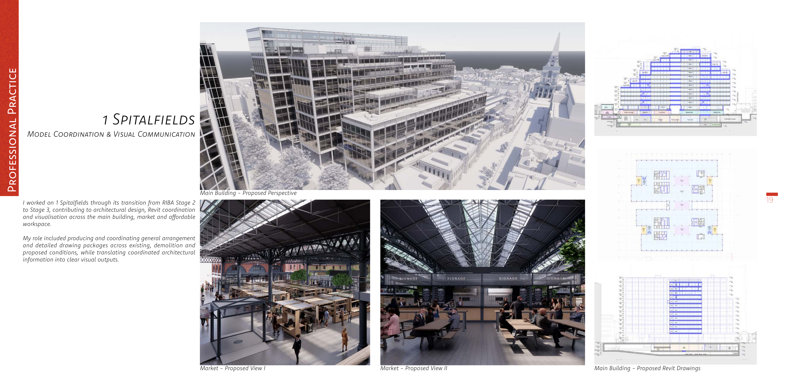

1 Spitalfields.
Professional design,
coordination & communication.
At Foster + Partners, I contributed to 1 Spitalfields as the project progressed from RIBA Stage 2 into Stage 3. I worked across architectural design, coordinated Revit modelling and drawing production, alongside visual communication for the main building, market and associated public spaces.
Design, coordination
and delivery.
I contributed to the atrium, landscape, market planning and mezzanine canopy while producing and coordinating Revit drawing packages across the Stage 2–3 transition.
The work moved continuously between BIM coordination, technical documentation and visual communication. I also translated project models into Unreal Engine environments and film-based outputs to support design review and communicate spatial proposals clearly.
